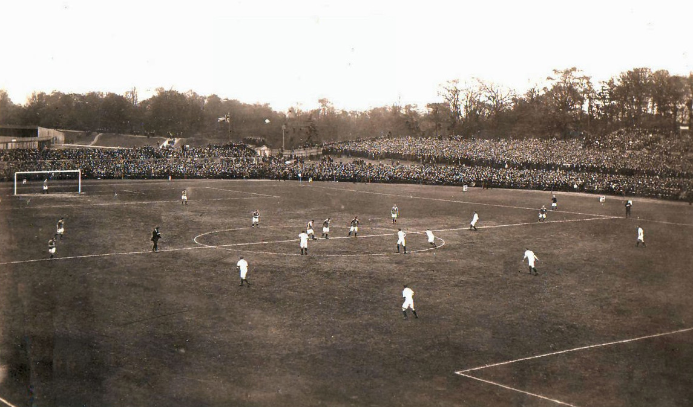
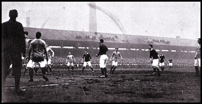
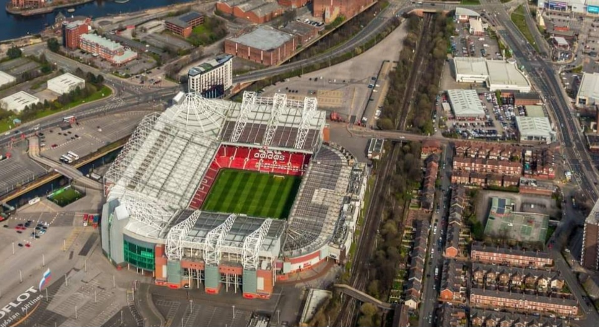

우승기록
프리미어 리그 : 1907-08, 1910-11, 1951-52, 1955-56, 1956-57, 1964-65, 1966-67, 1992-93, 1993-94, 1995-96, 1996-97, 1998-99, 1999-00, 2000-01, 2002-03, 2006-07, 2007-08, 2008-09, 2010-11, 2012-13
EFL 챔피언십 : 1935-36, 1974-75
FA컵 : 1908-09, 1947-48, 1962-63, 1976-77, 1982-83, 1984-85, 1989-90, 1993-94, 1995-96, 1998-99, 2003-04, 2015-16
EFL컵 : 1991-92, 2005-06, 2008-09, 2009-10, 2016-17, 2022-23
FA 커뮤니티 실드 : 1908, 1911, 1952, 1956, 1957, 1965, 1967, 1977, 1983, 1990, 1993, 1994, 1996, 1997, 2003, 2007, 2008, 2010, 2011, 2013, 2016
UEFA 컵위너스컵 : 1990-91
UEFA 유로파 리그 : 2016-17
UEFA 챔피언스 리그 : 1967-68, 1998-99, 2007-08
UEFA 슈퍼컵 : 1991
FIFA 클럽 월드컵 : 2008
홈구장

노스 로드
개장일: 1883년 10월 27일
폐장일: 1893년 6월
수용인원: 12,000명
위치: 맨체스터 뉴턴 히스

뱅크 스트리트
개장일: 1893년 9월 1일
폐장일: 1910년 1월 22일
수용인원: 12,000명
위치: 맨체스터 클레이턴

올드 트래포드
개장일: 1910년 2월 19일
수용인원: 74,310명
위치: 맨체스터 트래포드 맷 버스비 거리
건설비용: 9만 파운드
그라운드 크기: 105m x 68m
UEFA 등급: ★★★★
2022-23 시즌 주요 선수 ( 4 - 2 - 3 - 1 )
10 Marcus Rashford
25 Jadon Sancho

8 Bruno Fernandes
21 Antony
14 Christian Eriksen
18 Casemiro
23 Luke Shaw
2 Victor Lindelof
19 Raphael Varane
29 Aaron Wan-Bissaka
1 David De Gea
2022-23 시즌 감독과 전술
에릭 텐하흐
대수: 29대
감독 기간: 2022년 4월 21일 ~
사용 포메이션: 4 - 2 - 3 - 1
장점: 유스 선수 기용, 빌드업 후 역습 전술
단점: 자국 출신 선수 고집
역사적인 경기

1998-99 UCL 결승
1999년 5월 27일
맨유 vs 뮌헨 (2 vs 1)

2002-03 UCL 8강
2003년 4월 23일
맨유 vs 레알마드리드 (4 vs 3)